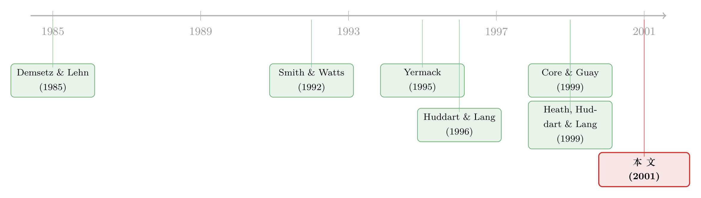

人手一份期权，到底是激励，还是公司缺钱的暗号？
本文读的是 Core & Guay (2001, Journal of Financial Economics)：他们用 1994–1997 年 756 家公司、把「前五名高管之外的所有员工」单独拎出来，第一次在大样本里追问——公司为什么要给普通员工发那么多股票期权？答案出人意料地朴素：期权发得最凶的，往往是那些手头缺现金、又借不到钱的公司。与此同时，员工到底什么时候去行权，竟然一半听经济学的，一半听心理学的——股价每创一次 52 周新高，行权就多一分。
1 一个被高管光环挡住的问题
关于「股票期权」，金融学界讲了二十年的故事，几乎全是讲给 CEO 听的。Yermack (1995) 数 CEO 的期权、Hall and Liebman (1998) 问 CEO 到底是不是「像公务员一样拿薪水」、Core and Guay (1999) 研究公司怎么把 CEO 的期权激励调到「目标水平」——聚光灯始终打在金字塔尖那五个人身上。
可现实是，期权早就不再是高管专属的奢侈品了。一份 1999 年 William M. Mercer 的调查（被 USA Today 引用）发现，「给至少一半员工发期权」的大公司比例，从 1993 年的 17% 一路涨到 1999 年的 39%。在某些公司，期权发得太狠，以至于机构股东开始拒绝批准「再增发可用于期权的股份」。
于是一个尴尬的空白浮现出来：占了期权大头的，其实是普通员工；而我们对他们却几乎一无所知。本文作者把「非高管员工 (non-executive employees)」定义为除了代理声明书里那五位薪酬最高的高管之外的全体员工，然后给出了一组让人吃惊的描述性数字：在样本公司里，所有员工持有的在外期权，平均超过总股本的 6.9%；其中 非高管员工持有 67%。按人头摊，中位数公司的普通员工人均期权组合价值超过 $3,000，均值则高达 $17,000——分布极度右偏。
期权确实「下沉」到了基层。但问题也随之而来：一个流水线上的普通员工，凭一己之力根本撼动不了股价，给他发期权，到底图什么？
2 三种解释，与一个统一的追问
作者一上来就摊牌：公司给普通员工发期权，无非三个理由——提供股权激励、吸引并留住特定类型的员工、以及替代现金薪酬。
这三个理由听上去都对，但它们各自的「指纹」长得不一样。要把它们分开，光看「存量」不够，还得看「流量」。于是全文围绕一个核心追问展开：如果期权真的服务于这三个目的，那么它的持有量、新增的授予 (grants)、以及员工的行权 (exercises)，就都应该随公司特征「可预测地」变动。作者据此搭了一个三段式的框架：
- 存量 (levels)：公司当前给普通员工配了多少股权激励？这由「监督有多难」决定。
- 流量之一——授予 (grants)：今年新发了多少？这是文章的真正戏眼。
- 流量之二——行权 (exercises)：员工今年又把多少期权兑现了？
而授予和行权这两股「流量」是互相纠缠的——发得多会诱发行权，行权多又会反过来触发补发。所以作者把它们写成一组联立方程 (simultaneous equations) 一起估计。
这其实是把 Core and Guay (1999) 对 CEO 的「目标激励水平」逻辑，整套搬到了普通员工身上：先估一个「该有多少」的横截面模型，再看现实偏离目标后，公司是否用新授予把它「拉回去」。
接下来我们一步步走过这三块积木。
3 第一块积木：存量——监督越难，期权越多
为什么要给一个影响不了股价的人发期权？作者的回答绕开了「个人激励」，转向了「群体」与「筛选」：期权能诱发员工之间的相互监督 (mutual monitoring)，改善的是团队激励；同时，因为员工离职时通常被迫立刻行权（从而被迫次优地提前行权），加上两到三年的归属期 (vesting period)，期权天然就是一种留人的工具（Hale, 1998；Kole, 1997）。最后，敢接「把财富绑在股价上」这种合同的，往往是风险厌恶程度更低的员工——于是期权还顺带做了一次「自我筛选」。
沿着 Demsetz and Lehn (1985)、Jensen and Meckling (1992)、Smith and Watts (1992) 的逻辑，作者预测：当直接监督员工的成本越高时，公司越要倚重股权激励——也就是公司越大、越分散、经营环境噪声越大、成长机会越多的时候。这就引出了第一个估计方程：
$$ \begin{aligned} \text{Option plan incentives}_{it-1} =\ & b_0 + b_1\,\text{Log(market value of assets)}_{it-1} \\ & + b_2\,\text{Log(\# of employees)}_{it-1} + b_3\,\text{Log(Idiosyncratic risk)}_{it-1} \\ & + b_4\,\text{Book-to-market}_{it-1} + b_5\,\text{R\&D}_{it-1} \\ & + b_6\,\text{Growth options per employee}_{it-1} + b_7\,\text{Total diversification}_{it-1} \\ & + b_8\,\text{Intersegment sales}_{it-1} + b_9\,\text{Geographic diversification}_{it-1} \\ & + b_{10}\,\text{Top5 option residual}_{it-1} + b_{11}\,\text{Industry controls} + e_{it-1} \end{aligned} $$
这里每个变量都对应一个故事：用资产市值的对数和员工人数的对数代理「规模与分散度」；用特质风险 (idiosyncratic risk) 的对数代理「经营噪声」——取对数是为了刻画 Demsetz-Lehn 那个「因为风险厌恶，激励随噪声递增但边际递减」的形状；用账面市值比代理成长机会（成长越好、比值越低）；用「人均成长期权」代理人力资本的重要性；用两个熵 (entropy) 指标衡量多元化。
特别值得一提的是 Top5 option residual 这一项：它是把前五名高管的期权激励对规模、成长、风险回归后取的残差，用来捕捉「这家公司有多偏爱用期权」这种公司层面的、观测不到的癖好，顺便控制掉其他替代性激励机制。
作者发现，存量确实与这些经济学决定因素「可预测地」相关——也就是说，普通员工的期权配置，并不是随手撒胡椒面，而是大体遵循监督成本的逻辑。这块积木，稳了。
4 真正的戏眼：授予——期权是「缺钱」的暗号
如果说存量模型只是热身，那么授予模型才是全文的反转所在。
一个自然的问题是：公司什么时候会大手笔地新发期权？教科书会说「为了激励」。但作者把另一条线索推到了台前——现金。授予股权不需要当期支付任何现金；只要公司与员工之间的信息不对称，小于公司与外部投资者之间的信息不对称，用期权发薪就比去外部融资更便宜。于是预测变得很具体：现金紧张、资本需求大、进入资本市场成本高的公司，会用期权去替代现金薪酬。
这就是第二个、也是最关键的方程。我把它的核心部分用标注卡片拆开：
完整的授予方程是这样的：
$$ \begin{aligned} \text{Grants of option incentives}_{it} =\ & b_0 + b_1\,\text{Cash flow shortfall}_{it-1} + b_2\,\text{Book-to-market}_{it-1} \\ & + b_3\,\text{R\&D}_{it-1} + b_4\,\text{Long-term debt indicator}_{it-1} \\ & + b_5\,\text{Interest burden}_{it-1} + b_6\,\text{Low marginal tax}_{it-1} \\ & + b_7\,\text{High marginal tax}_{it-1} + b_8\,\text{Stock return}_{it} \\ & + b_9\,\text{Stock return}_{it-1} + b_{10}\,\text{Incentive residual}_{it-1} \\ & + b_{11}\,\text{Incentives exercised}_{it} + b_{12}\,\text{Log(sales)}_{it-1} \\ & + b_{13}\,\text{Log(\# of employees)}_{it-1} + b_{14}\,\text{Industry controls} + u_{it} \end{aligned} $$
这里藏着几处精巧的设计。现金流缺口 (cash flow shortfall) 与利息负担 (interest burden) 一起代理现金约束；利息负担还兼任「盈利约束」的代理——因为用期权替代现金薪酬可以少冲减利润（现金薪酬要费用化，而期权授予的价值当时只在财报附注里披露），而「利息覆盖」恰恰是债务契约里最常见的条款。作者甚至细心处理了一个不连续点：对于那 3.5% 利息支出超过折旧前经营利润的公司，把利息负担设为 1，免得离群值搅局。
边际税率也被放了进来：作者用 Plesko (1999) 的简化分类，造了 Low marginal tax 和 High marginal tax 两个指标——当未来税率预期更高时，递延薪酬的税收抵扣更划算，所以低税率公司用股权薪酬的成本反而更高。
而全文最有力的结论，就落在这个方程上：当公司有更大的融资需求、并且面临融资约束时，它们更密集地给普通员工发期权——这一支持「期权是现金替代品」假说的证据，作者用了「strongly support」这样的措辞。换句话说，「人手一份期权」与其说是一封激励的情书，不如说是一张缺钱的暗号。（关于公司发股权后把现金攒起来的另一面，可参见《为什么公司发了股票，却把钱原封不动地存了起来？》。）
但也别把话说满。作者诚实地承认，对于「公司是否通过年度授予来主动管理激励水平」——也就是 Incentive residual 那个负向回归项——证据是「mixed（混杂的）」。目标管理的逻辑在 CEO 身上成立，搬到普通员工身上，只能算半个成立。
5 第三块积木：行权——一半经济学，一半心理学
最后一块积木，是员工什么时候去行权。这里，本文从一篇公司金融论文，悄悄滑进了行为金融的地界。
先说经济学的那一半。Lambert et al. (1991)、Huddart (1994) 的模型预测：风险厌恶的员工会提前行权 (early exercise)，而且当更大比例的财富被绑在股价上时越倾向于提前行权。提前行权是有代价的——你放弃了期权的时间价值。所以作者沿着 Huddart and Lang (1996) 与 Heath, Huddart, and Lang (1999，下称 HHL) 的思路预测：当员工期权的可实现价值 (realizable value) 占其 Black-Scholes 价值的比例越高（即越深度价内）时，行权越多。
但真正让这一节出彩的，是心理学的那一半。HHL 用七家公司的周度数据，记录到一个难以用理性解释的偏差——参照点 (reference point) 偏差：当股价突破过去 52 周最高点的那一刻，行权会立刻激增。问题在于，如果「股价上涨后多行权」本身可以被理性化，那么「股价超过 52 周高点」这件事并不携带任何边际信息，本不该有任何解释力。
作者把 HHL 这个用七家公司发现的偏差，搬到了 568 家公司、1,264 个公司–年的行权数据上做检验——样本更粗（只有年度、且看不到个人持仓），但更广。他们把偏差「操作化」成一个巧妙的计数变量：当年股价创下 12 个月新高的月份数。直觉是，如果股票在 12 个月里有 9 个月都在创新高，行权就该比只有 3 个月创新高时更多。作为推论，他们还预测了一个对称的反面：行权是当年股价创 12 个月新低的月份数的减函数。
结果在控制了经济学决定因素与股票收益之后依然稳健：股价创 52 周新高时，行权显著更多；创 52 周新低时，行权显著更少。 HHL 在七家公司里看到的心理偏差，在一个广泛样本里被确认了。普通员工的手指，确实会被一个「整数关口」般的参照点牵动。（关于 52 周高点如何拖慢市场对消息的反应，可参见《股价撞上「天花板」：52周高点如何拖慢了对客户消息的反应》。）
6 文献脉络
把这篇论文放回它生长的那条藤上，脉络其实很清晰。
最早的根，扎在股权激励的横截面决定因素上：Demsetz and Lehn (1985) 提出，监督越难、噪声越大，公司越倚重内部人持股；Jensen and Meckling (1992)、Smith and Watts (1992) 把这套逻辑接到了「知识分布」与「投资机会集」上——本文存量模型的每一个变量，几乎都能在这里找到出处。
接着，是高管期权这条主线：Yermack (1995) 第一个系统地问「公司发 CEO 期权发得有没有效率」，Hall and Liebman (1998) 量化了 CEO 财富对股价的敏感度，Core and Guay (1999) 则给出了「目标激励水平 + 用新授予动态调整」的框架。本文做的事，本质上是把这条成熟的高管研究方法论，整套移植到金字塔的下半截。

而第三条线，是期权行权行为：Huddart and Lang (1996) 用八家公司的数据打开了「员工到底怎么行权」这个黑箱，Heath, Huddart, and Lang (1999) 进一步发现了参照点偏差。本文恰好坐在这三条线的交汇处——它既是高管激励文献的「下沉」，又是行权行为文献的「放大」，还顺手把一个心理偏差从小样本搬进了大样本。它的位置，是一个承上启下的描述性基石：在它之前，关于非高管期权的大样本研究，几乎是空白。
7 评论与延伸（Q&A + 研究方向）
(a) 几个可能的疑问
Q：把「前五名高管之外的所有人」一锅烩成「非高管员工」，会不会太粗？里面既有副总裁，也有前台。
这是本文最大的测量软肋，作者自己也清楚。代理声明书只披露前五名，所以「非高管」里其实塞进了大量中高层管理者。好在结论的方向（融资约束 → 多发期权）更可能被这种聚合稀释而非夸大——能在这么粗的口径下依然「strongly support」，反而说明信号够强。但凡是涉及「最底层员工」的精细推断，都得打个折扣。
Q：「融资约束的公司发更多期权」会不会是反向因果——是发期权这件事本身让公司显得缺现金？
部分能缓解：授予方程里的现金流缺口、利息负担等约束变量大多取的是
t-1期、且是三年均值，而被解释的授予在t期，时间上是「先约束、后授予」。但这终究是横截面相关，作者也没有声称因果。更干净的识别（比如利用某个外生的融资冲击）要留给后人。
Q：那个「目标激励水平」的残差为什么对 CEO 管用、对普通员工就「mixed」？
一个合理的解释是：CEO 的激励是被董事会精心「设计」出来的，所以围绕目标做动态调整很自然；而普通员工的期权更像是按现金需求和市场行情批量发放的，并没有一个被刻意盯住的「人均敏感度目标」。这恰恰侧面印证了本文的主线——对基层而言，现金替代的动机盖过了精细的激励管理。
Q：52 周高点效应，会不会只是「股价涨了、价内程度深了，所以理性地多行权」？
这正是作者要排除的混淆。他们在回归里同时放了可实现价值/BS 价值比例和当期、滞后收益，让「价内程度」和「整数关口」竞争解释力。在控制住前者之后，「创新高的月份数」依然显著为正——这部分就很难再用理性的价内逻辑解释掉了。
Q：这篇 2001 年的论文，对今天还有意义吗？毕竟会计准则早就变了。
论文里「期权授予价值只在附注披露、不冲减利润」这个前提，在 2004 年 FAS 123R 之后已经改变——这反而提供了一个绝佳的「准自然实验」：如果当年发期权部分是为了不冲减利润，那么强制费用化之后，融资约束公司发期权的倾向是否应当减弱？这是后续研究最值得接的一根线。
Q：税收那一块，结论可信吗？
作者用的是 Plesko (1999) 验证过的简化分类（低/中/高三档），它在文献里被证明「几乎不输给更复杂的边际税率代理」。但税收效应在期权研究里历来偏弱、且方向上容易和盈利约束纠缠（两者都和亏损相关），所以这一块更适合当作稳健性背景，而不是核心证据。
(b) 几个可能的研究问题与提案
1. FAS 123R 作为外生冲击，重估「期权即现金替代」假说 【经济故事】如果融资约束公司发期权是为了既省现金、又不冲减利润，那么 2004 年强制费用化抹掉了「不冲减利润」这一半好处后，这类公司的非高管期权强度应当相对下降。这能把本文的横截面相关，升级为一个带政策冲击的双重差分 (difference-in-differences, DiD)。 【可行性】高。处理强度可用授予前的现金流缺口/利息负担连续衡量，数据用 Compustat + 代理声明书即可，识别相对干净，唯一难点是 123R 前后期权计量口径的可比性。
2. 把「非高管」拆开：中层 vs. 基层，谁在为缺钱买单？ 【经济故事】本文的聚合口径掩盖了一个关键异质性——融资约束驱动的，究竟是给中层管理者发期权，还是真正下沉到了流水线？如果是后者，「现金替代」的福利含义完全不同（基层员工更难分散这份风险）。 【可行性】中。需要更细的薪酬分层数据（如部分公司 S-8、ESOP 申报或员工层面的行政数据），美国大样本较难，但可借助北欧国家的雇主–雇员匹配数据实现。
3. 行权参照点偏差是否外溢到信用市场？ 【经济故事】既然普通员工在 52 周高点集中行权，会带来集中的内部人卖压与股权稀释，这是否在公司债/CDS 利差上留下可观测的痕迹？这把一个「员工心理偏差」连到了「债权人定价」。 【可行性】中。需要把月度 52 周高点计数与公司债二级市场利差（TRACE）对齐，识别上要小心高点本身与基本面改善同向，可用同发行人不同期限债券做内部对照。
4. 缺现金发期权的公司，事后真的「省」下来了吗？ 【经济故事】如果期权是现金的替代品，那么高授予强度的约束型公司，应当在随后几年表现出更低的现金消耗、更少的外部融资。检验「替代」是否真的兑现，而非仅仅是事前动机。 【可行性】高。纯 Compustat 面板即可，用授予强度预测后续 1–3 年的净外部融资与现金持有变化，注意控制反向的「越缺钱越被迫融资」渠道。
8 参考文献
Core, J., Guay, W. (2001). Stock option plans for non-executive employees. Journal of Financial Economics 61(2), 253–287.
Core, J., Guay, W. (1999). The use of equity grants to manage optimal equity incentive levels. Journal of Accounting and Economics 28(2), 151–184.
Demsetz, H., Lehn, K. (1985). The structure of corporate ownership: causes and consequences. Journal of Political Economy 93(6), 1155–1177.
Heath, C., Huddart, S., Lang, M. (1999). Psychological factors and stock option exercise. Quarterly Journal of Economics 114(2), 601–628.
Huddart, S., Lang, M. (1996). Employee stock option exercises: an empirical analysis. Journal of Accounting and Economics 21(1), 5–43.
Hall, B., Liebman, J. (1998). Are CEOs really paid like bureaucrats? Quarterly Journal of Economics 113(3), 653–691.
Smith, C., Watts, R. (1992). The investment opportunity set and corporate financing, dividend, and compensation policies. Journal of Financial Economics 32(3), 263–292.
Yermack, D. (1995). Do corporations award CEO stock options effectively? Journal of Financial Economics 39(2–3), 237–269.
Jensen, M., Meckling, W. (1992). Specific and general knowledge, and organizational structure. In Werin, L., Wijkander, H. (Eds.), Contract Economics. Basil Blackwell, Oxford, pp. 251–274.
Lambert, R., Larcker, D., Verrecchia, R. (1991). Portfolio considerations in valuing executive compensation. Journal of Accounting Research 29(1), 129–149.
Plesko, G. (1999). An evaluation of alternative measures of corporate tax rates. Working Paper, Massachusetts Institute of Technology.